By now you should be well aware of the correlation between electrical conductivity and certain types of materials. Those materials allowing for easy passage of free electrons are called conductors, while those materials impeding the passage of free electrons are called insulators.
Unfortunately, the scientific theories explaining why certain materials conduct and others don't are quite complex, rooted in quantum mechanical explanations in how electrons are arranged around the nuclei of atoms. Contrary to the well-known "planetary" model of electrons whirling around an atom's nucleus as well-defined chunks of matter in circular or elliptical orbits, electrons in "orbit" don't really act like pieces of matter at all. Rather, they exhibit the characteristics of both particle and wave, their behavior constrained by placement within distinct zones around the nucleus referred to as "shells" and "subshells." Electrons can occupy these zones only in a limited range of energies depending on the particular zone and how occupied that zone is with other electrons. If electrons really did act like tiny planets held in orbit around the nucleus by electrostatic attraction, their actions described by the same laws describing the motions of real planets, there could be no real distinction between conductors and insulators, and chemical bonds between atoms would not exist in the way they do now. It is the discrete, "quantitized" nature of electron energy and placement described by quantum physics that gives these phenomena their regularity.
When an electron is free to assume higher energy states around an atom's nucleus (due to its placement in a particular "shell"), it may be free to break away from the atom and comprise part of an electric current through the substance. If the quantum limitations imposed on an electron deny it this freedom, however, the electron is considered to be "bound" and cannot break away (at least not easily) to constitute a current. The former scenario is typical of conducting materials, while the latter is typical of insulating materials.
Some textbooks will tell you that an element's conductivity or nonconductivity is exclusively determined by the number of electrons residing in the atoms' outer "shell" (called the valence shell), but this is an oversimplification, as any examination of conductivity versus valence electrons in a table of elements will confirm. The true complexity of the situation is further revealed when the conductivity of molecules (collections of atoms bound to one another by electron activity) is considered.
A good example of this is the element carbon, which comprises materials of vastly differing conductivity: graphite and diamond. Graphite is a fair conductor of electricity, while diamond is practically an insulator (stranger yet, it is technically classified as a semiconductor, which in its pure form acts as an insulator, but can conduct under high temperatures and/or the influence of impurities). Both graphite and diamond are composed of the exact same types of atoms: carbon, with 6 protons, 6 neutrons and 6 electrons each. The fundamental difference between graphite and diamond being that graphite molecules are flat groupings of carbon atoms while diamond molecules are tetrahedral (pyramid-shaped) groupings of carbon atoms.
If atoms of carbon are joined to other types of atoms to form compounds, electrical conductivity becomes altered once again. Silicon carbide, a compound of the elements silicon and carbon, exhibits nonlinear behavior: its electrical resistance decreases with increases in applied voltage! Hydrocarbon compounds (such as the molecules found in oils) tend to be very good insulators. As you can see, a simple count of valence electrons in an atom is a poor indicator of a substance's electrical conductivity.
All metallic elements are good conductors of electricity, due to the way the atoms bond with each other. The electrons of the atoms comprising a mass of metal are so uninhibited in their allowable energy states that they float freely between the different nuclei in the substance, readily motivated by any electric field. The electrons are so mobile, in fact, that they are sometimes described by scientists as an electron gas, or even an electron sea in which the atomic nuclei rest. This electron mobility accounts for some of the other common properties of metals: good heat conductivity, malleability and ductility (easily formed into different shapes), and a lustrous finish when pure.
Thankfully, the physics behind all this is mostly irrelevant to our purposes here. Suffice it to say that some materials are good conductors, some are poor conductors, and some are in between. For now it is good enough to simply understand that these distinctions are determined by the configuration of the electrons around the constituent atoms of the material.
An important step in getting electricity to do our bidding is to be able to construct paths for electrons to flow with controlled amounts of resistance. It is also vitally important that we be able to prevent electrons from flowing where we don't want them to, by using insulating materials. However, not all conductors are the same, and neither are all insulators. We need to understand some of the characteristics of common conductors and insulators, and be able to apply these characteristics to specific applications.
Almost all conductors possess a certain, measurable resistance (special types of materials called superconductors possess absolutely no electrical resistance, but these are not ordinary materials, and they must be held in special conditions in order to be super conductive). Typically, we assume the resistance of the conductors in a circuit to be zero, and we expect that current passes through them without producing any appreciable voltage drop. In reality, however, there will almost always be a voltage drop along the (normal) conductive pathways of an electric circuit, whether we want a voltage drop to be there or not:
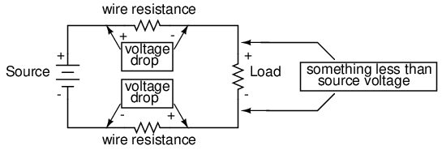
In order to calculate what these voltage drops will be in any particular circuit, we must be able to ascertain the resistance of ordinary wire, knowing the wire size and diameter. Some of the following sections of this chapter will address the details of doing this.
It should be common-sense knowledge that liquids flow through large-diameter pipes easier than they do through small-diameter pipes (if you would like a practical illustration, try drinking a liquid through straws of different diameters). The same general principle holds for the flow of electrons through conductors: the broader the cross-sectional area (thickness) of the conductor, the more room for electrons to flow, and consequently, the easier it is for flow to occur (less resistance).
Electrical wire is usually round in cross-section (although there are some unique exceptions to this rule), and comes in two basic varieties: solid and stranded. Solid copper wire is just as it sounds: a single, solid strand of copper the whole length of the wire. Stranded wire is composed of smaller strands of solid copper wire twisted together to form a single, larger conductor. The greatest benefit of stranded wire is its mechanical flexibility, being able to withstand repeated bending and twisting much better than solid copper (which tends to fatigue and break after time).
Wire size can be measured in several ways. We could speak of a wire's diameter, but since its really the cross-sectional area that matters most regarding the flow of electrons, we are better off designating wire size in terms of area.
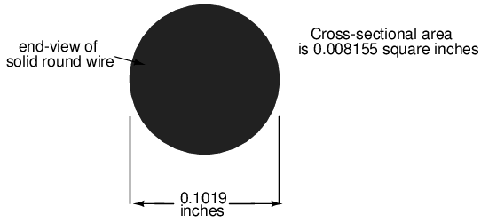
The wire cross-section picture shown above is, of course, not drawn to scale. The diameter is shown as being 0.1019 inches. Calculating the area of the cross-section with the formula Area = πr2, we get an area of 0.008155 square inches:
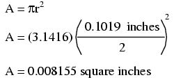
These are fairly small numbers to work with, so wire sizes are often expressed in measures of thousandths-of-an-inch, or mils. For the illustrated example, we would say that the diameter of the wire was 101.9 mils (0.1019 inch times 1000). We could also, if we wanted, express the area of the wire in the unit of square mils, calculating that value with the same circle-area formula, Area = πr2:
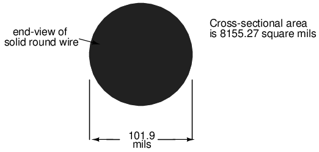
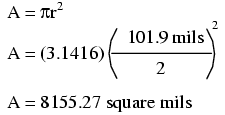
However, electricians and others frequently concerned with wire size use another unit of area measurement tailored specifically for wire's circular cross-section. This special unit is called the circular mil (sometimes abbreviated cmil). The sole purpose for having this special unit of measurement is to eliminate the need to invoke the factor π (3.1415927 . . .) in the formula for calculating area, plus the need to figure wire radius when you've been given diameter. The formula for calculating the circular-mil area of a circular wire is very simple:
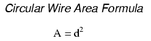
Because this is a unit of area measurement, the mathematical power of 2 is still in effect (doubling the width of a circle will always quadruple its area, no matter what units are used, or if the width of that circle is expressed in terms of radius or diameter). To illustrate the difference between measurements in square mils and measurements in circular mils, I will compare a circle with a square, showing the area of each shape in both unit measures:
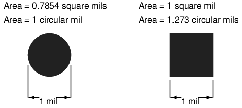
And for another size of wire:
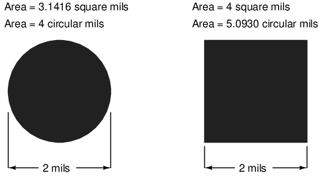
Obviously, the circle of a given diameter has less cross-sectional area than a square of width and height equal to the circle's diameter: both units of area measurement reflect that. However, it should be clear that the unit of "square mil" is really tailored for the convenient determination of a square's area, while "circular mil" is tailored for the convenient determination of a circle's area: the respective formula for each is simpler to work with. It must be understood that both units are valid for measuring the area of a shape, no matter what shape that may be. The conversion between circular mils and square mils is a simple ratio: there are π (3.1415927 . . .) square mils to every 4 circular mils.
Another measure of cross-sectional wire area is the gauge. The gauge scale is based on whole numbers rather than fractional or decimal inches. The larger the gauge number, the skinnier the wire; the smaller the gauge number, the fatter the wire. For those acquainted with shotguns, this inversely-proportional measurement scale should sound familiar.
The table at the end of this section equates gauge with inch diameter, circular mils, and square inches for solid wire. The larger sizes of wire reach an end of the common gauge scale (which naturally tops out at a value of 1), and are represented by a series of zeros. "3/0" is another way to represent "000," and is pronounced "triple-ought." Again, those acquainted with shotguns should recognize the terminology, strange as it may sound. To make matters even more confusing, there is more than one gauge "standard" in use around the world. For electrical conductor sizing, the American Wire Gauge (AWG), also known as the Brown and Sharpe (B&S) gauge, is the measurement system of choice. In Canada and Great Britain, the British Standard Wire Gauge (SWG) is the legal measurement system for electrical conductors. Other wire gauge systems exist in the world for classifying wire diameter, such as the Stubs steel wire gauge and the Steel Music Wire Gauge (MWG), but these measurement systems apply to non-electrical wire use.
The American Wire Gauge (AWG) measurement system, despite its oddities, was designed with a purpose: for every three steps in the gauge scale, wire area (and weight per unit length) approximately doubles. This is a handy rule to remember when making rough wire size estimations!
For very large wire sizes (fatter than 4/0), the wire gauge system is typically abandoned for cross-sectional area measurement in thousands of circular mils (MCM), borrowing the old Roman numeral "M" to denote a multiple of "thousand" in front of "CM" for "circular mils." The following table of wire sizes does not show any sizes bigger than 4/0 gauge, because solid copper wire becomes impractical to handle at those sizes. Stranded wire construction is favored, instead.
Soild copper wire table: below
Soild copper wire table:
| Size | Diameter | Cross-sectional | area | Weight |
|---|---|---|---|---|
| AWG | inches | cir. mils | sq. inches | lb/1000 ft |
| 4/0 | 0.4600 | 211,600 | 0.1662 | 640.5 |
| 3/0 | 0.4096 | 167,800 | 0.1318 | 507.9 |
| 2/0 | 0.3648 | 133,100 | 0.1045 | 402.8 |
| 1/0 | 0.3249 | 105,500 | 0.08289 | 319.5 |
| 1 | 0.2893 | 83,690 | 0.06573 | 253.5 |
| 2 | 0.2576 | 66,370 | 0.05213 | 200.9 |
| 3 | 0.2294 | 52,630 | 0.04134 | 159.3 |
| 4 | 0.2043 | 41,740 | 0.03278 | 126.4 |
| 5 | 0.1819 | 33,100 | 0.02600 | 100.2 |
| 6 | 0.1620 | 26,250 | 0.02062 | 79.46 |
| 7 | 0.1443 | 20,820 | 0.01635 | 63.02 |
| 7 | 0.1443 | 20,820 | 0.01635 | 63.02 |
| 8 | 0.1285 | 16,510 | 0.01297 | 49.97 |
| 9 | 0.1144 | 13,090 | 0.01028 | 39.63 |
| 10 | 0.1019 | 10,380 | 0.008155 | 31.43 |
| 11 | 0.09074 | 8,234 | 0.006467 | 24.92 |
| 12 | 0.08081 | 6,530 | 0.005129 | 19.77 |
| 13 | 0.07196 | 5,178 | 0.004067 | 15.68 |
| 14 | 0.06408 | 4,107 | 0.003225 | 12.43 |
| 15 | 0.05707 | 3,257 | 0.002558 | 9.858 |
| 16 | 0.05082 | 2,583 | 0.002028 | 7.818 |
| 17 | 0.04526 | 2,048 | 0.001609 | 6.200 |
| 18 | 0.04030 | 1,624 | 0.001276 | 4.917 |
| 19 | 0.03589 | 1,288 | 0.001012 | 3.899 |
| 20 | 0.03196 | 1,022 | 0.0008023 | 3.092 |
| 21 | 0.02846 | 810.1 | 0.0006363 | 2.452 |
| 22 | 0.02535 | 642.5 | 0.0005046 | 1.945 |
| 23 | 0.02257 | 509.5 | 0.0004001 | 1.542 |
| 23 | 0.02257 | 509.5 | 0.0004001 | 1.542 |
| 24 | 0.02010 | 404.0 | 0.0003173 | 1.233 |
| 25 | 0.01790 | 320.4 | 0.0002517 | 0.9699 |
| 26 | 0.01594 | 254.1 | 0.0001996 | 0.7692 |
| 27 | 0.01420 | 201.5 | 0.0001583 | 0.6100 |
| 28 | 0.01264 | 159.8 | 0.0001255 | 0.4837 |
| 29 | 0.01126 | 126.7 | 0.00009954 | 0.3836 |
| 30 | 0.01003 | 100.5 | 0.00007894 | 0.3042 |
| 31 | 0.008928 | 79.70 | 0.00006260 | 0.2413 |
| 32 | 0.007950 | 63.21 | 0.00004964 | 0.1913 |
| 33 | 0.007080 | 50.13 | 0.00003937 | 0.1517 |
| 34 | 0.006305 | 39.75 | 0.00003122 | 0.1203 |
| 35 | 0.005615 | 31.52 | 0.00002476 | 0.09542 |
| 36 | 0.005000 | 25.00 | 0.00001963 | 0.07567 |
| 37 | 0.004453 | 19.83 | 0.00001557 | 0.06001 |
| 38 | 0.003965 | 15.72 | 0.00001235 | 0.04759 |
| 39 | 0.003531 | 12.47 | 0.000009793 | 0.03774 |
| 40 | 0.003145 | 9.888 | 0.000007766 | 0.02993 |
| 41 | 0.002800 | 7.842 | 0.000006159 | 0.02374 |
| 42 | 0.002494 | 6.219 | 0.000004884 | 0.01882 |
| 43 | 0.002221 | 4.932 | 0.000003873 | 0.01493 |
| 44 | 0.001978 | 3.911 | 0.000003072 | 0.01184 |
For some high-current applications, conductor sizes beyond the practical size limit of round wire are required. In these instances, thick bars of solid metal called busbars are used as conductors. Busbars are usually made of copper or aluminum, and are most often uninsulated. They are physically supported away from whatever framework or structure is holding them by insulator standoff mounts. Although a square or rectangular cross-section is very common for busbar shape, other shapes are used as well. Cross-sectional area for busbars is typically rated in terms of circular mils (even for square and rectangular bars!), most likely for the convenience of being able to directly equate busbar size with round wire.
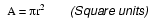
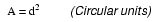
The smaller the wire, the greater the resistance for any given length, all other factors being equal. A wire with greater resistance will dissipate a greater amount of heat energy for any given amount of current, the power being equal to P=I2R.
Dissipated power in a resistance manifests itself in the form of heat, and excessive heat can be damaging to a wire (not to mention objects near the wire!), especially considering the fact that most wires are insulated with a plastic or rubber coating, which can melt and burn. Thin wires will, therefore, tolerate less current than thick wires, all other factors being equal. A conductor's current-carrying limit is known as its ampacity.
Primarily for reasons of safety, certain standards for electrical wiring have been established within the United States, and are specified in the National Electrical Code (NEC). Typical NEC wire ampacity tables will show allowable maximum currents for different sizes and applications of wire. Though the melting point of copper theoretically imposes a limit on wire ampacity, the materials commonly employed for insulating conductors melt at temperatures far below the melting point of copper, and so practical ampacity ratings are based on the thermal limits of the insulation. Voltage dropped as a result of excessive wire resistance is also a factor in sizing conductors for their use in circuits, but this consideration is better assessed through more complex means (which we will cover in this chapter). A table derived from an NEC listing is shown for example:
Ampacities of copper wire: below
Ampacities of copper wire, in free air at 30o C:
| INSULATION TYPE: | |||
|---|---|---|---|
| RUW, T | THW, THWN | FEP, FEPB | |
| TW | RUH | THHN, XHHW | |
| Size | Current Rating | Current Rating | Current Rating |
| AWG | @ 60 degrees C | @ 75 degrees C | @ 90 degrees C |
| 20 | *9 | *12.5 | |
| 18 | *13 | 18 | |
| 16 | *18 | 24 | |
| 14 | 25 | 30 | 35 |
| 12 | 30 | 35 | 40 |
| 10 | 40 | 50 | 55 |
| 8 | 60 | 70 | 80 |
| 6 | 80 | 95 | 105 |
| 4 | 105 | 125 | 140 |
| 2 | 140 | 170 | 190 |
| 1 | 165 | 195 | 220 |
| 1/0 | 195 | 230 | 260 |
| 2/0 | 225 | 265 | 300 |
| 3/0 | 260 | 310 | 350 |
| 4/0 | 300 | 360 | 405 |
* = estimated values; normally, these small wire sizes are not manufactured with these insulation types, above.
Notice the substantial ampacity differences between same-size wires with different types of insulation. This is due, again, to the thermal limits (60o, 75o, 90o) of each type of insulation material.
These ampacity ratings are given for copper conductors in "free air" (maximum typical air circulation), as opposed to wires placed in conduit or wire trays. As you will notice, the table fails to specify ampacities for small wire sizes. This is because the NEC concerns itself primarily with power wiring (large currents, big wires) rather than with wires common to low-current electronic work.
There is meaning in the letter sequences used to identify conductor types, and these letters usually refer to properties of the conductor's insulating layer(s). Some of these letters symbolize individual properties of the wire while others are simply abbreviations. For example, the letter "T" by itself means "thermoplastic" as an insulation material, as in "TW" or "THHN." However, the three-letter combination "MTW" is an abbreviation for Machine Tool Wire, a type of wire whose insulation is made to be flexible for use in machines experiencing significant motion or vibration.
Wire insulation codes: below
Soild copper wire table:
| Code | Insulation Material |
|---|---|
| C | Cotton |
| FEP | Fluorinated Ethylene Propylene |
| MI | Mineral (magnesium oxide) |
| PFA | Perfluoroalkoxy |
| R | Rubber (sometimes Neoprene) |
| S | Silicone "rubber" |
| SA | Silicone-asbestos |
| T | Thermoplastic |
| TA | Thermoplastic-asbestos |
| TFE | Polytetrafluoroethylene ("Teflon") |
| X | Cross-linked synthetic polymer |
| Z | Modified ethylene tetrafluoroethylene |
| Heat rating | |
| H | 75 degrees Celsius |
| HH | 90 degrees Celsius |
| Outer covering ("jacket") | |
| N | Nylon |
| Special service conditions | |
| U | Underground |
| W | Wet |
| -2 | 90 degrees Celsius and wet |
Therefore, a "THWN" conductor has Thermoplastic insulation, is Heat resistant to 75o Celsius, is rated for Wet conditions, and comes with a Nylon outer jacketing.
Letter codes like these are only used for general-purpose wires such as those used in households and businesses. For high-power applications and/or severe service conditions, the complexity of conductor technology defies classification according to a few letter codes. Overhead power line conductors are typically bare metal, suspended from towers by glass, porcelain, or ceramic mounts known as insulators. Even so, the actual construction of the wire to withstand physical forces both static (dead weight) and dynamic (wind) loading can be complex, with multiple layers and different types of metals wound together to form a single conductor. Large, underground power conductors are sometimes insulated by paper, then enclosed in a steel pipe filled with pressurized nitrogen or oil to prevent water intrusion. Such conductors require support equipment to maintain fluid pressure throughout the pipe.
Other insulating materials find use in small-scale applications. For instance, the small-diameter wire used to make electromagnets (coils producing a magnetic field from the flow of electrons) are often insulated with a thin layer of enamel. The enamel is an excellent insulating material and is very thin, allowing many "turns" of wire to be wound in a small space.
Normally, the ampacity rating of a conductor is a circuit design limit never to be intentionally exceeded, but there is an application where ampacity exceedence is expected: in the case of fuses.
A fuse is nothing more than a short length of wire designed to melt and separate in the event of excessive current. Fuses are always connected in series with the component(s) to be protected from overcurrent, so that when the fuse blows (opens) it will open the entire circuit and stop current through the component(s). A fuse connected in one branch of a parallel circuit, of course, would not affect current through any of the other branches.
Normally, the thin piece of fuse wire is contained within a safety sheath to minimize hazards of arc blast if the wire burns open with violent force, as can happen in the case of severe overcurrents. In the case of small automotive fuses, the sheath is transparent so that the fusible element can be visually inspected. Residential wiring used to commonly employ screw-in fuses with glass bodies and a thin, narrow metal foil strip in the middle. A photograph showing both types of fuses is shown here:
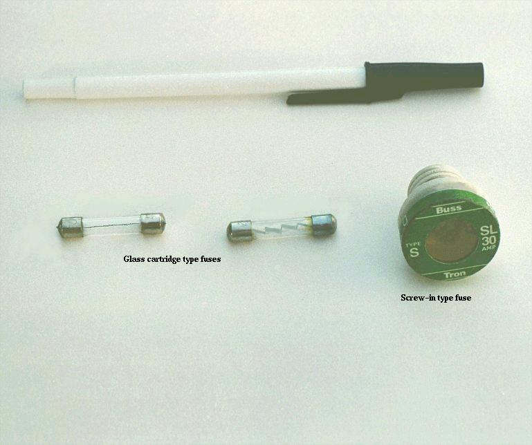
Cartridge type fuses are popular in automotive applications, and in industrial applications when constructed with sheath materials other than glass. Because fuses are designed to "fail" open when their current rating is exceeded, they are typically designed to be replaced easily in a circuit. This means they will be inserted into some type of holder rather than being directly soldered or bolted to the circuit conductors. The following is a photograph showing a couple of glass cartridge fuses in a multi-fuse holder:
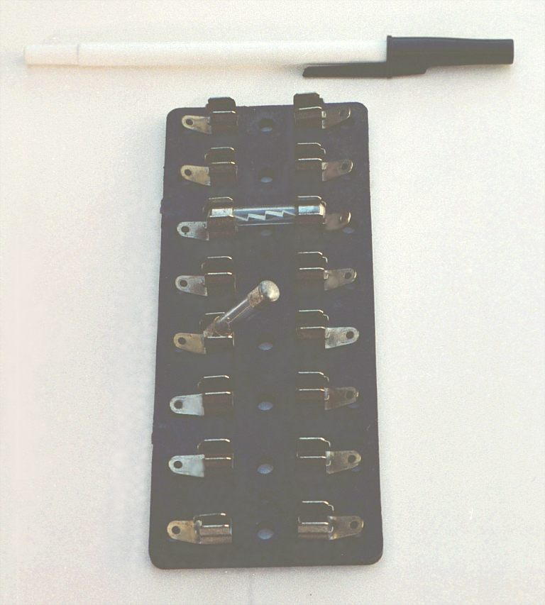
The fuses are held by spring metal clips, the clips themselves being permanently connected to the circuit conductors. The base material of the fuse holder (or fuse block as they are sometimes called) is chosen to be a good insulator.
Another type of fuse holder for cartridge-type fuses is commonly used for installation in equipment control panels, where it is desirable to conceal all electrical contact points from human contact. Unlike the fuse block just shown, where all the metal clips are openly exposed, this type of fuse holder completely encloses the fuse in an insulating housing:
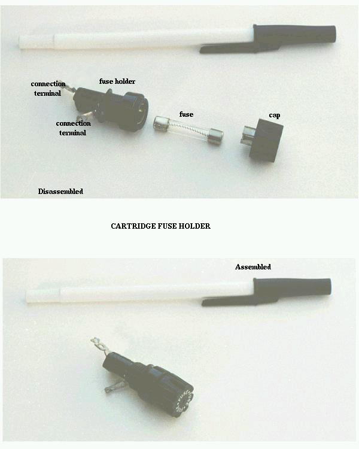
The most common device in use for overcurrent protection in high-current circuits today is the circuit breaker. Circuit breakers are specially designed switches that automatically open to stop current in the event of an overcurrent condition. Small circuit breakers, such as those used in residential, commercial and light industrial service are thermally operated. They contain a bimetallic strip (a thin strip of two metals bonded back-to-back) carrying circuit current, which bends when heated. When enough force is generated by the bimetallic strip (due to overcurrent heating of the strip), the trip mechanism is actuated and the breaker will open. Larger circuit breakers are automatically actuated by the strength of the magnetic field produced by current-carrying conductors within the breaker, or can be triggered to trip by external devices monitoring the circuit current (those devices being called protective relays).
Because circuit breakers don't fail when subjected to overcurrent conditions -- rather, they merely open and can be re-closed by moving a lever -- they are more likely to be found connected to a circuit in a more permanent manner than fuses. A photograph of a small circuit breaker is shown here:
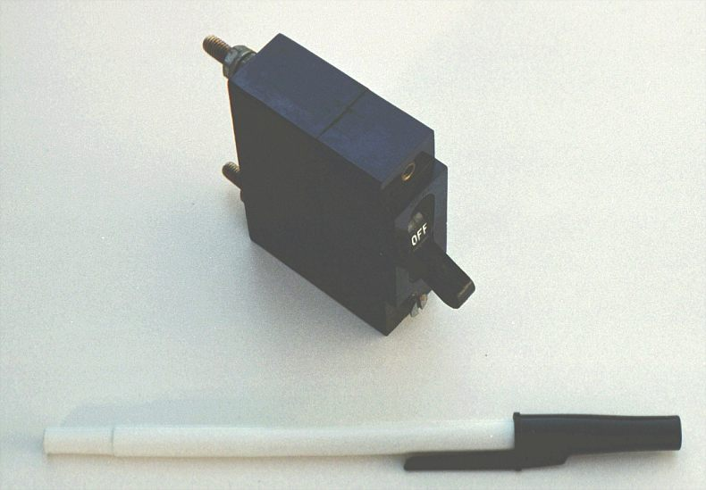
From outside appearances, it looks like nothing more than a switch. Indeed, it could be used as such. However, its true function is to operate as an overcurrent protection device.
It should be noted that some automobiles use inexpensive devices known as fusible links for overcurrent protection in the battery charging circuit, due to the expense of a properly-rated fuse and holder. A fusible link is a primitive fuse, being nothing more than a short piece of rubber-insulated wire designed to melt open in the event of overcurrent, with no hard sheathing of any kind. Such crude and potentially dangerous devices are never used in industry or even residential power use, mainly due to the greater voltage and current levels encountered. As far as this author is concerned, their application even in automotive circuits is questionable.
The electrical schematic drawing symbol for a fuse is an S-shaped curve:
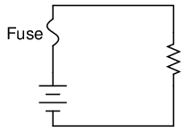
Fuses are primarily rated, as one might expect, in the unit for current: amps. Although their operation depends on the self-generation of heat under conditions of excessive current by means of the fuse's own electrical resistance, they are engineered to contribute a negligible amount of extra resistance to the circuits they protect. This is largely accomplished by making the fuse wire as short as is practically possible. Just as a normal wire's ampacity is not related to its length (10-gauge solid copper wire will handle 40 amps of current in free air, regardless of how long or short of a piece it is), a fuse wire of certain material and gauge will blow at a certain current no matter how long it is. Since length is not a factor in current rating, the shorter it can be made, the less resistance it will have end-to-end.
However, the fuse designer also has to consider what happens after a fuse blows: the melted ends of the once-continuous wire will be separated by an air gap, with full supply voltage between the ends. If the fuse isn't made long enough on a high-voltage circuit, a spark may be able to jump from one of the melted wire ends to the other, completing the circuit again:
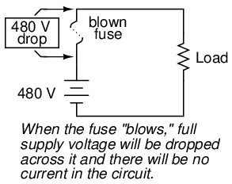
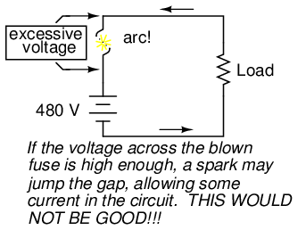
Consequently, fuses are rated in terms of their voltage capacity as well as the current level at which they will blow.
Some large industrial fuses have replaceable wire elements, to reduce the expense. The body of the fuse is an opaque, reusable cartridge, shielding the fuse wire from exposure and shielding surrounding objects from the fuse wire.
There's more to the current rating of a fuse than a single number. If a current of 35 amps is sent through a 30 amp fuse, it may blow suddenly or delay before blowing, depending on other aspects of its design. Some fuses are intended to blow very fast, while others are designed for more modest "opening" times, or even for a delayed action depending on the application. The latter fuses are sometimes called slow-blow fuses due to their intentional time-delay characteristics.
A classic example of a slow-blow fuse application is in electric motor protection, where inrush currents of up to ten times normal operating current are commonly experienced every time the motor is started from a dead stop. If fast-blowing fuses were to be used in an application like this, the motor could never get started because the normal inrush current levels would blow the fuse(s) immediately! The design of a slow-blow fuse is such that the fuse element has more mass (but no more ampacity) than an equivalent fast-blow fuse, meaning that it will heat up slower (but to the same ultimate temperature) for any given amount of current.
On the other end of the fuse action spectrum, there are so-called semiconductor fuses designed to open very quickly in the event of an overcurrent condition. Semiconductor devices such as transistors tend to be especially intolerant of overcurrent conditions, and as such require fast-acting protection against overcurrents in high-power applications.
Fuses are always supposed to be placed on the "hot" side of the load in systems that are grounded. The intent of this is for the load to be completely de-energized in all respects after the fuse opens. To see the difference between fusing the "hot" side versus the "neutral" side of a load, compare these two circuits:
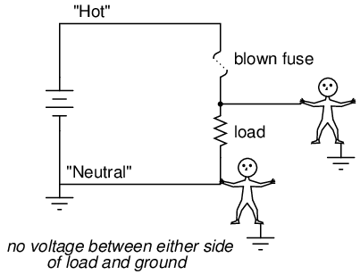
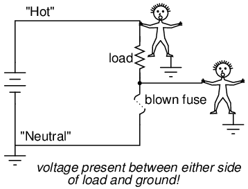
In either case, the fuse successfully interrupted current to the load, but the lower circuit fails to interrupt potentially dangerous voltage from either side of the load to ground, where a person might be standing. The first circuit design is much safer.
As it was said before, fuses are not the only type of overcurrent protection device in use. Switch-like devices called circuit breakers are often (and more commonly) used to open circuits with excessive current, their popularity due to the fact that they don't destroy themselves in the process of breaking the circuit as fuses do. In any case, though, placement of the overcurrent protection device in a circuit will follow the same general guidelines listed above: namely, to "fuse" the side of the power supply not connected to ground.
Although overcurrent protection placement in a circuit may determine the relative shock hazard of that circuit under various conditions, it must be understood that such devices were never intended to guard against electric shock. Neither fuses nor circuit breakers were designed to open in the event of a person getting shocked; rather, they are intended to open only under conditions of potential conductor overheating. Overcurrent devices primarily protect the conductors of a circuit from overtemperature damage (and the fire hazards associated with overly hot conductors), and secondarily protect specific pieces of equipment such as loads and generators (some fast-acting fuses are designed to protect electronic devices particularly susceptible to current surges). Since the current levels necessary for electric shock or electrocution are much lower than the normal current levels of common power loads, a condition of overcurrent is not indicative of shock occurring. There are other devices designed to detect certain shock conditions (ground-fault detectors being the most popular), but these devices strictly serve that one purpose and are uninvolved with protection of the conductors against overheating.
Conductor ampacity rating is a crude assessment of resistance based on the potential for current to create a fire hazard. However, we may come across situations where the voltage drop created by wire resistance in a circuit poses concerns other than fire avoidance. For instance, we may be designing a circuit where voltage across a component is critical, and must not fall below a certain limit. If this is the case, the voltage drops resulting from wire resistance may cause an engineering problem while being well within safe (fire) limits of ampacity:
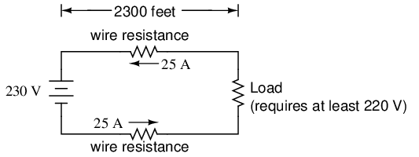
If the load in the above circuit will not tolerate less than 220 volts, given a source voltage of 230 volts, then we'd better be sure that the wiring doesn't drop more than 10 volts along the way. Counting both the supply and return conductors of this circuit, this leaves a maximum tolerable drop of 5 volts along the length of each wire. Using Ohm's Law (R=E/I), we can determine the maximum allowable resistance for each piece of wire:
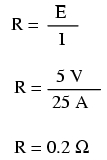
We know that the wire length is 2300 feet for each piece of wire, but how do we determine the amount of resistance for a specific size and length of wire? To do that, we need another formula:
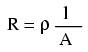
This formula relates the resistance of a conductor with its specific resistance (the Greek letter "rho" (ρ), which looks similar to a lower-case letter "p"), its length ("l"), and its cross-sectional area ("A"). Notice that with the length variable on the top of the fraction, the resistance value increases as the length increases (analogy: it is more difficult to force liquid through a long pipe than a short one), and decreases as cross-sectional area increases (analogy: liquid flows easier through a fat pipe than through a skinny one). Specific resistance is a constant for the type of conductor material being calculated.
The specific resistances of several conductive materials can be found in the following table. We find copper near the bottom of the table, second only to silver in having low specific resistance (good conductivity):
Specific resistance table: below
Specific resistance at 20o C:
| Material | Element/Alloy | (ohm-cmil/ft) | (ohm-cm·10-6) |
|---|---|---|---|
| Nichrome | Alloy | 675 | 112.2 |
| Nichrome V | Alloy | 650 | 108.1 |
| Manganin | Alloy | 290 | 48.21 |
| Constantan | Alloy | 272.97 | 45.38 |
| Steel* | Alloy | 100 | 16.62 |
| Platinum | Element | 63.16 | 10.5 |
| Iron | Element | 57.81 | 9.61 |
| Nickel | Element | 41.69 | 6.93 |
| Zinc | Element | 35.49 | 5.90 |
| Molybdenum | Element | 32.12 | 5.34 |
| Tungsten | Element | 31.76 | 5.28 |
| Aluminum | Element | 15.94 | 2.650 |
| Gold | Element | 13.32 | 2.214 |
| Copper | Element | 10.09 | 1.678 |
| Silver | Element | 9.546 | 1.587 |
| * = Steel alloy at 99.5% iron, 0.5% carbon |
Notice that the figures for specific resistance in the above table are given in the very strange unit of "ohms-cmil/ft" (Ω-cmil/ft), This unit indicates what units we are expected to use in the resistance formula (R=ρl/A). In this case, these figures for specific resistance are intended to be used when length is measured in feet and cross-sectional area is measured in circular mils.
The metric unit for specific resistance is the ohm-meter (Ω-m), or ohm-centimeter (Ω-cm), with 1.66243 x 10-9 Ω-meters per Ω-cmil/ft (1.66243 x 10-7 Ω-cm per Ω-cmil/ft). In the Ω-cm column of the table, the figures are actually scaled as µΩ-cm due to their very small magnitudes. For example, iron is listed as 9.61 µΩ-cm, which could be represented as 9.61 x 10-6 Ω-cm.
When using the unit of Ω-meter for specific resistance in the R=ρl/A formula, the length needs to be in meters and the area in square meters. When using the unit of Ω-centimeter (Ω-cm) in the same formula, the length needs to be in centimeters and the area in square centimeters.
All these units for specific resistance are valid for any material (Ω-cmil/ft, Ω-m, or Ω-cm). One might prefer to use Ω-cmil/ft, however, when dealing with round wire where the cross-sectional area is already known in circular mils. Conversely, when dealing with odd-shaped busbar or custom busbar cut out of metal stock, where only the linear dimensions of length, width, and height are known, the specific resistance units of Ω-meter or Ω-cm may be more appropriate.
Going back to our example circuit, we were looking for wire that had 0.2 Ω or less of resistance over a length of 2300 feet. Assuming that we're going to use copper wire (the most common type of electrical wire manufactured), we can set up our formula as such:
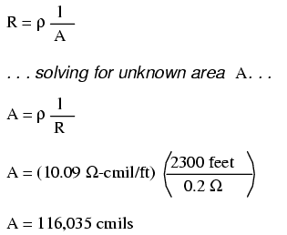
Algebraically solving for A, we get a value of 116,035 circular mils. Referencing our solid wire size table, we find that "double-ought" (2/0) wire with 133,100 cmils is adequate, whereas the next lower size, "single-ought" (1/0), at 105,500 cmils is too small. Bear in mind that our circuit current is a modest 25 amps. According to our ampacity table for copper wire in free air, 14 gauge wire would have sufficed (as far as not starting a fire is concerned). However, from the standpoint of voltage drop, 14 gauge wire would have been very unacceptable.
Just for fun, let's see what 14 gauge wire would have done to our power circuit's performance. Looking at our wire size table, we find that 14 gauge wire has a cross-sectional area of 4,107 circular mils. If we're still using copper as a wire material (a good choice, unless we're really rich and can afford 4600 feet of 14 gauge silver wire!), then our specific resistance will still be 10.09 Ω-cmil/ft:
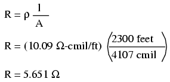
Remember that this is 5.651 Ω per 2300 feet of 14-gauge copper wire, and that we have two runs of 2300 feet in the entire circuit, so each wire piece in the circuit has 5.651 Ω of resistance:
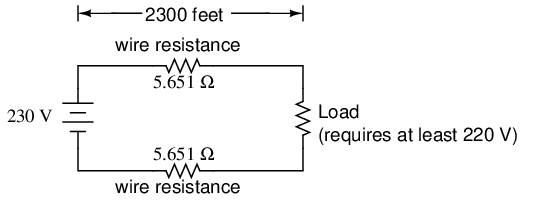
Our total circuit wire resistance is 2 times 5.651, or 11.301 Ω. Unfortunately, this is far too much resistance to allow 25 amps of current with a source voltage of 230 volts. Even if our load resistance was 0 Ω, our wiring resistance of 11.301 Ω would restrict the circuit current to a mere 20.352 amps! As you can see, a "small" amount of wire resistance can make a big difference in circuit performance, especially in power circuits where the currents are much higher than typically encountered in electronic circuits.
Let's do an example resistance problem for a piece of custom-cut busbar. Suppose we have a piece of solid aluminum bar, 4 centimeters wide by 3 centimeters tall by 125 centimeters long, and we wish to figure the end-to-end resistance along the long dimension (125 cm). First, we would need to determine the cross-sectional area of the bar:
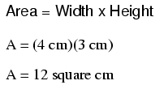
We also need to know the specific resistance of aluminum, in the unit proper for this application (Ω-cm). From our table of specific resistances, we see that this is 2.65 x 10-6 Ω-cm. Setting up our R=ρl/A formula, we have:
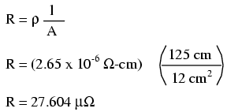
As you can see, the sheer thickness of a busbar makes for very low resistances compared to that of standard wire sizes, even when using a material with a greater specific resistance.
The procedure for determining busbar resistance is not fundamentally different than for determining round wire resistance. We just need to make sure that cross-sectional area is calculated properly and that all the units correspond to each other as they should.
You might have noticed on the table for specific resistances that all figures were specified at a temperature of 20o Celsius. If you suspected that this meant specific resistance of a material may change with temperature, you were right!
Resistance values for conductors at any temperature other than the standard temperature (usually specified at 20 Celsius) on the specific resistance table must be determined through yet another formula:
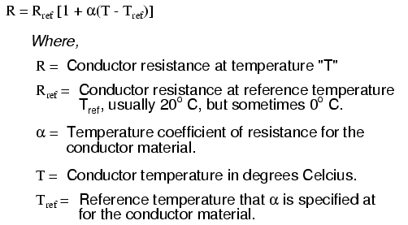
The "alpha" (α) constant is known as the temperature coefficient of resistance, and symbolizes the resistance change factor per degree of temperature change. Just as all materials have a certain specific resistance (at 20o C), they also change resistance according to temperature by certain amounts. For pure metals, this coefficient is a positive number, meaning that resistance increases with increasing temperature. For the elements carbon, silicon, and germanium, this coefficient is a negative number, meaning that resistance decreases with increasing temperature. For some metal alloys, the temperature coefficient of resistance is very close to zero, meaning that the resistance hardly changes at all with variations in temperature (a good property if you want to build a precision resistor out of metal wire!). The following table gives the temperature coefficients of resistance for several common metals, both pure and alloy:
Temperature coefficient table: below
Temperature coefficient (α) per degree C:
| Material | Element/Alloy | Temp. coefficient |
|---|---|---|
| Nickel | Element | 0.005866 |
| Iron | Element | 0.005671 |
| Molybdenum | Element | 0.004579 |
| Tungsten | Element | 0.004403 |
| Aluminum | Element | 0.004308 |
| Copper | Element | 0.004041 |
| Silver | Element | 0.003819 |
| Platinum | Element | 0.003729 |
| Gold | Element | 0.003715 |
| Zinc | Element | 0.003847 |
| Steel* | Alloy | 0.003 |
| Nichrome | Alloy | 0.00017 |
| Nichrome V | Alloy | 0.00013 |
| Manganin | Alloy | 0.000015 |
| Constantan | Alloy | ±0.000074 |
| * = S teel alloy at 99.5% iron, 0.5% carbon |
Let's take a look at an example circuit to see how temperature can affect wire resistance, and consequently circuit performance:
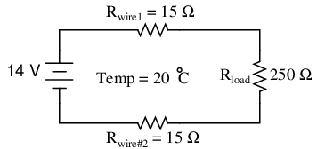
This circuit has a total wire resistance (wire 1 + wire 2) of 30 Ω at standard temperature. Setting up a table of voltage, current, and resistance values we get:
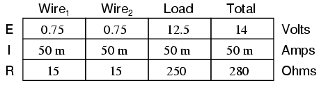
At 20o Celsius, we get 12.5 volts across the load and a total of 1.5 volts (0.75 + 0.75) dropped across the wire resistance. If the temperature were to rise to 35o Celsius, we could easily determine the change of resistance for each piece of wire. Assuming the use of copper wire (α = 0.004041) we get:
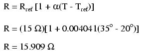
Recalculating our circuit values, we see what changes this increase in temperature will bring:
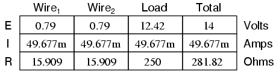
As you can see, voltage across the load went down (from 12.5 volts to 12.42 volts) and voltage drop across the wires went up (from 0.75 volts to 0.79 volts) as a result of the temperature increasing. Though the changes may seem small, they can be significant for power lines stretching miles between power plants and substations, substations and loads. In fact, power utility companies often have to take line resistance changes resulting from seasonal temperature variations into account when calculating allowable system loading.
Conductors lose all of their electrical resistance when cooled to super-low temperatures (near absolute zero, about -273o Celsius). It must be understood that superconductivity is not merely an extrapolation of most conductors' tendency to gradually lose resistance with decreasing temperature; rather, it is a sudden, quantum leap in resistivity from finite to nothing. A superconducting material has absolutely zero electrical resistance, not just some small amount.
Superconductivity was first discovered by H. Kamerlingh Onnes at the University of Leiden, Netherlands in 1911. Just three years earlier, in 1908, Onnes had developed a method of liquefying helium gas, which provided a medium with which to supercool experimental objects to just a few degrees above absolute zero. Deciding to investigate changes in electrical resistance of mercury when cooled to this low of a temperature, he discovered that its resistance dropped to nothing just below the boiling point of helium.
There is some debate over exactly how and why superconducting materials superconduct. One theory holds that electrons group together and travel in pairs (called Cooper pairs) within a superconductor rather than travel independently, and that has something to do with their frictionless flow. Interestingly enough, another phenomenon of super-cold temperatures, superfluidity, happens with certain liquids (especially liquid helium), resulting in frictionless flow of molecules.
Superconductivity promises extraordinary capabilities for electric circuits. If conductor resistance could be eliminated entirely, there would be no power losses or inefficiencies in electric power systems due to stray resistances. Electric motors could be made almost perfectly (100%) efficient. Components such as capacitors and inductors, whose ideal characteristics are normally spoiled by inherent wire resistances, could be made ideal in a practical sense. Already, some practical superconducting conductors, motors, and capacitors have been developed, but their use at this present time is limited due to the practical problems intrinsic to maintaining super-cold temperatures.
The threshold temperature for a superconductor to switch from normal conduction to superconductivity is called the transition temperature. Transition temperatures for "classic" superconductors are in the cryogenic range (near absolute zero), but much progress has been made in developing "high-temperature" superconductors which superconduct at warmer temperatures. One type is a ceramic mixture of yttrium, barium, copper, and oxygen which transitions at a relatively balmy -160o Celsius. Ideally, a superconductor should be able to operate within the range of ambient temperatures, or at least within the range of inexpensive refrigeration equipment.
The critical temperatures for a few common substances are shown here in this table. Temperatures are given in kelvins, which has the same incremental span as degrees Celsius (an increase or decrease of 1 kelvin is the same amount of temperature change as 1o Celsius), only offset so that 0 K is absolute zero. This way, we don't have to deal with a lot of negative figures.
Critical temperature, superconductors below
Critical temperatures given in Kelvins
| Material | Element or Alloy | Critical temperature(K) |
|---|---|---|
| Aluminum | Element | 1.20 |
| Cadmium | Element | 0.56 |
| Lead | Element | 7.2 |
| Mercury | Element | 4.16 |
| Niobium | Element | 8.70 |
| Thorium | Element | 1.37 |
| Tin | Element | 3.72 |
| Titanium | Element | 0.39 |
| Uranium | ELement | 1.0 |
| Zinc | Element | 0.91 |
| Niobium/Tin | Alloy | 18.1 |
| Cupric sulphide | Compound | 1.6 |
Superconducting materials also interact in interesting ways with magnetic fields. While in the superconducting state, a superconducting material will tend to exclude all magnetic fields, a phenomenon known as the Meissner effect. However, if the magnetic field strength intensifies beyond a critical level, the superconducting material will be rendered non-superconductive. In other words, superconducting materials will lose their superconductivity (no matter how cold you make them) if exposed to too strong of a magnetic field. In fact, the presence of any magnetic field tends to lower the critical temperature of any superconducting material: the more magnetic field present, the colder you have to make the material before it will superconduct.
This is another practical limitation to superconductors in circuit design, since electric current through any conductor produces a magnetic field. Even though a superconducting wire would have zero resistance to oppose current, there will still be a limit of how much current could practically go through that wire due to its critical magnetic field limit.
There are already a few industrial applications of superconductors, especially since the recent (1987) advent of the yttrium-barium-copper-oxygen ceramic, which only requires liquid nitrogen to cool, as opposed to liquid helium. It is even possible to order superconductivity kits from educational suppliers which can be operated in high school labs (liquid nitrogen not included). Typically, these kits exhibit superconductivity by the Meissner effect, suspending a tiny magnet in mid-air over a superconducting disk cooled by a bath of liquid nitrogen.
The zero resistance offered by superconducting circuits leads to unique consequences. In a superconducting short-circuit, it is possible to maintain large currents indefinitely with zero applied voltage!
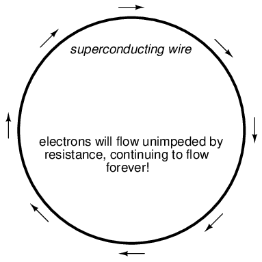
Rings of superconducting material have been experimentally proven to sustain continuous current for years with no applied voltage. So far as anyone knows, there is no theoretical time limit to how long an unaided current could be sustained in a superconducting circuit. If you're thinking this appears to be a form of perpetual motion, you're correct! Contrary to popular belief, there is no law of physics prohibiting perpetual motion; rather, the prohibition stands against any machine or system generating more energy than it consumes (what would be referred to as an over-unity device). At best, all a perpetual motion machine (like the superconducting ring) would be good for is to store energy, not generate it freely!
Superconductors also offer some strange possibilities having nothing to do with Ohm's Law. One such possibility is the construction of a device called a Josephson Junction, which acts as a relay of sorts, controlling one current with another current (with no moving parts, of course). The small size and fast switching time of Josephson Junctions may lead to new computer circuit designs: an alternative to using semiconductor transistors.
The atoms in insulating materials have very tightly-bound electrons, resisting free electron flow very well. However, insulators cannot resist indefinite amounts of voltage. With enough voltage applied, any insulating material will eventually succumb to the electrical "pressure" and electron flow will occur. However, unlike the situation with conductors where current is in a linear proportion to applied voltage (given a fixed resistance), current through an insulator is quite nonlinear: for voltages below a certain threshold level, virtually no electrons will flow, but if the voltage exceeds that threshold, there will be a rush of current.
Once current is forced through an insulating material, breakdown of that material's molecular structure has occurred. After breakdown, the material may or may not behave as an insulator any more, the molecular structure having been altered by the breach. There is usually a localized "puncture" of the insulating medium where the electrons flowed during breakdown.
Thickness of an insulating material plays a role in determining its breakdown voltage, otherwise known as dielectric strength. Specific dielectric strength is sometimes listed in terms of volts per mil (1/1000 of an inch), or kilovolts per inch (the two units are equivalent), but in practice it has been found that the relationship between breakdown voltage and thickness is not exactly linear. An insulator three times as thick has a dielectric strength slightly less than 3 times as much. However, for rough estimation use, volt-per-thickness ratings are fine.
Dielectric strength: below
Dielectric strength in kilovolts per inch (kV/in):
| Material* | Dielectric strength |
|---|---|
| Vacuum | 20 |
| Air | 20 to 75 |
| Porcelain | 40 to 200 |
| Paraffin Wax | 200 to 300 |
| Transformer Oil | 400 |
| Bakelite | 300 to 550 |
| Rubber | 450 to 700 |
| Shellac | 900 |
| Paper | 1250 |
| Teflon | 1500 |
| Glass | 2000 to 3000 |
| Mica | 5000 |
* = Materials listed are specially prepared for electrical use, above.
Tables of specific resistance and temperature coefficient of resistance for elemental materials (not alloys) were derived from figures found in the 78th edition of the CRC Handbook of Chemistry and Physics.
Table of superconductor critical temperatures derived from figures found in the 21st volume of Collier's Encyclopedia, 1968.
Contributors to this chapter are listed in chronological order of their contributions, from most recent to first. See Appendix 2 (Contributor List) for dates and contact information.
Aaron Forster (February 18, 2003): Typographical error correction.
Jason Starck (June 2000): HTML document formatting, which led to a much better-looking second edition.
Lessons In Electric Circuits copyright (C) 2000-2023 Tony R. Kuphaldt, under the terms and conditions of the CC BY License.